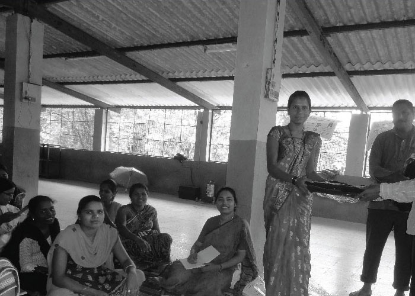
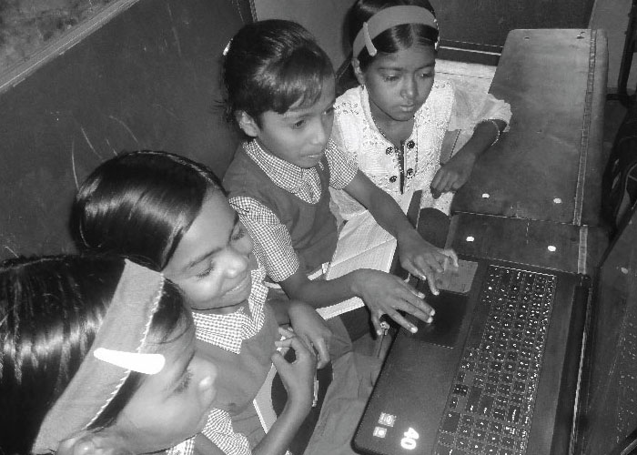
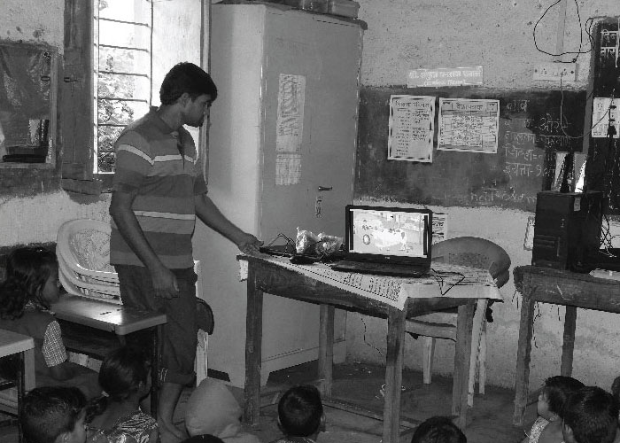

.jpg)


The English Learning and Digital Language program.
In the area of education, our focus with M.P.S.M is on strengthening primary education and language skills. The curriculum is specially designed to be relevant in the rural context. The teaching-learning materials attempt to make teaching-learning interactive, participatory and enjoyable. The teaching-learning materials include videos; large-size picture charts printed on durable flex material; teachers’ handbooks, flip charts and games. These materials are used not only with children in the village-level Learning Centres but also as part of continuing education for farmers and women’s groups.
Having created a foundation for English Teaching-Learning, we have now built on it and taken it to the next level. We have scripted, designed and produced a set of 19 animated video capsules along with a guide for facilitators. The systematic use of these educational materials will help meet the following objectives: introduce English sentences – speaking and writing; extend the learners’ English vocabulary – speaking and reading and enable the learners’ to use basic English in everyday life. Each of the 19 video capsules will be about 5 minutes in duration and will have simple 2-D animation with a voice-over.
500 DVD copies of the video capsules are produced and distributed to the village-level Learning Centres in 9 districts of Maharashtra. In this way thousands of children will benefit from these teaching-learning materials. In addition, the materials will also be shared with a network of primary schools and children’s boarding’s in the 9 districs.